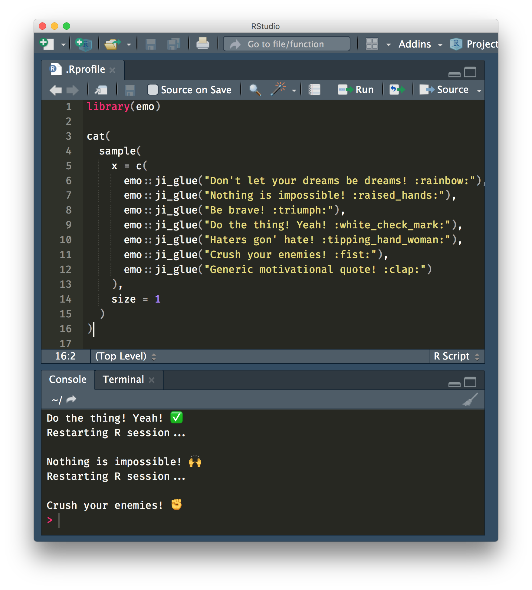

usethis::edit_r_profile()
tl;dr
You can create an R startup message by editing your .Rprofile, which you can open with usethis::edit_r_profile().
What’s an R profile?
It’s a file that contains R code that runs when you start or restart R. You can use it to customise your environment. For example, you could set options, create functions or load packages.
There’s lots of information in the R startup chapter of Colin Gillespie’s’s Efficient R Programming book.
But beware: use of an R profile may not be particularly reproducible if the .Rprofile file is unavailable to others who are executing your code. For example, you might use your profile to load packages that aren’t installed by another user.
You can use your favourite search engine to find examples of people’s R profiles. For example, in:
- Tony Fischetti’s On the Lambda blog
- Kris Eberwein’s post on how to pimp your Rprofile
- Stephen Turner’s post on Getting Genetics Done blog
- Jesse Lecy’s GitHub repo
I’m going to create something a little more… fun.
How to edit your .Rprofile
You could navigate to where the .Rprofile file is stored on your machine and edit it, but it’s easier to use the edit_r_profile() function from the usethis package.
• Modify '/Users/mattdray/.Rprofile'• Restart R for changes to take effectThe output from running this line shows the filepath to the .Rprofile and reminds you to restart R to reload the R profile and its newly-saved changes.
A frivolous use case
You could use your R profile to display a little message at start-up.
It’s four days into 2019 and you may be struggling with those new year resolutions. You’re probably going to need a motivational quote.
We can load the emo package within the R profile and add emojis to our messages. There’s a handy function – emo::ji_glue() – that allows you to paste text with emojis.
The following code selects one element at random from a set of motivational messages and prints it to the console on start-up.
library(emo) # devtools::install_github("hadley/emo")
cat(
sample(
x = c(
ji_glue("Don't let your dreams be dreams! :rainbow:"),
ji_glue("Nothing is impossible! :raised_hands:"),
ji_glue("Be brave! :triumph:"),
ji_glue("Do the thing! Yeah! :white_check_mark:"),
ji_glue("Haters gon' hate! :tipping_hand_woman:"),
ji_glue("Crush your enemies! :fist:"),
ji_glue("Generic motivational quote! :clap:")
),
size = 1
)
)You need a blank line at the end of the file. One will be added for you on save when editing in RStudio.
Outcome
Here’s the code in the script window and the result of having restarted R a few times.
{fig-alt=alt=“An RStudio window showing the .Rprofile script and several messages being printed to the console with successive restarts of the RStudio.” width=“100%”}
Just don’t get stuck in a loop of restarting R over and over again so you can see the messages. You might get overmotivated. Or you’ll spend so long restarting that you’ll have wasted loads of time and will need more motivational quotes to encourage yourself not to do it anymore.
Note
I forgot that there’s a great package called {praise} via RLadies that can generate the positive messages for you. Check it out.
Environment
Session info
Last rendered: 2023-08-04 08:54:32 BSTR version 4.3.1 (2023-06-16)
Platform: aarch64-apple-darwin20 (64-bit)
Running under: macOS Ventura 13.2.1
Matrix products: default
BLAS: /Library/Frameworks/R.framework/Versions/4.3-arm64/Resources/lib/libRblas.0.dylib
LAPACK: /Library/Frameworks/R.framework/Versions/4.3-arm64/Resources/lib/libRlapack.dylib; LAPACK version 3.11.0
locale:
[1] en_US.UTF-8/en_US.UTF-8/en_US.UTF-8/C/en_US.UTF-8/en_US.UTF-8
time zone: Europe/London
tzcode source: internal
attached base packages:
[1] stats graphics grDevices utils datasets methods base
loaded via a namespace (and not attached):
[1] htmlwidgets_1.6.2 compiler_4.3.1 fastmap_1.1.1 cli_3.6.1
[5] tools_4.3.1 htmltools_0.5.5 rstudioapi_0.15.0 yaml_2.3.7
[9] rmarkdown_2.23 knitr_1.43.1 jsonlite_1.8.7 xfun_0.39
[13] digest_0.6.33 rlang_1.1.1 fontawesome_0.5.1 evaluate_0.21 Reuse
CC BY-NC-SA 4.0